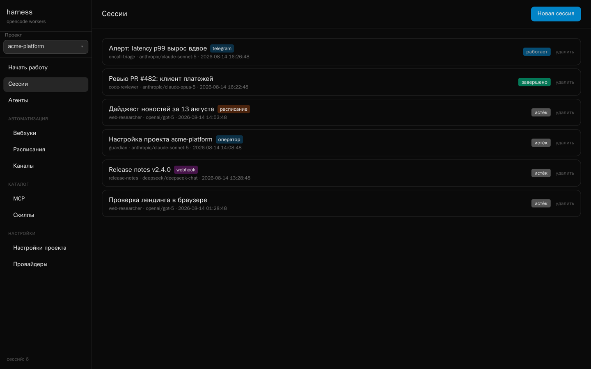
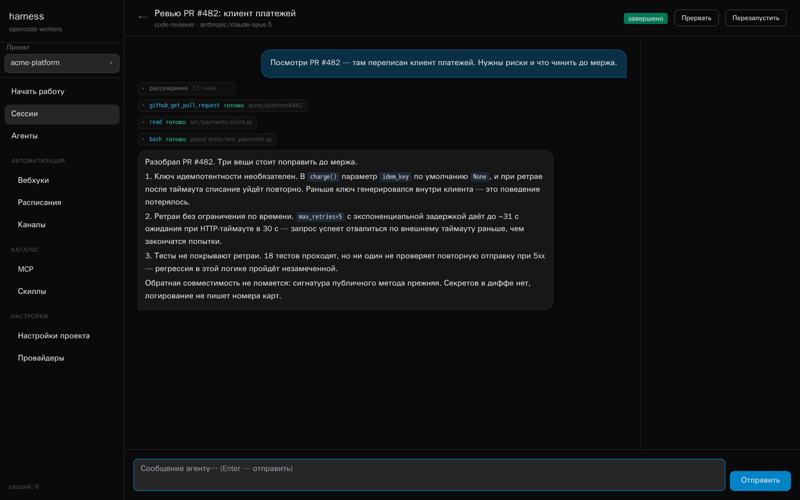
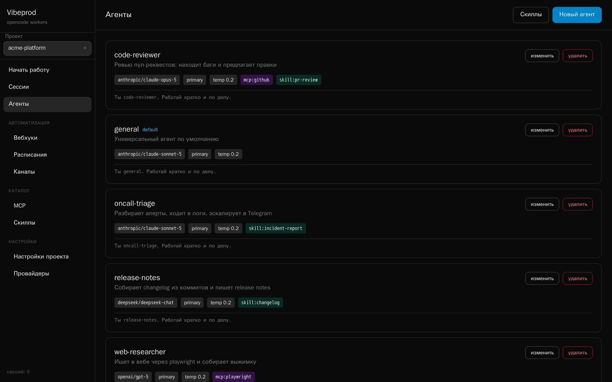
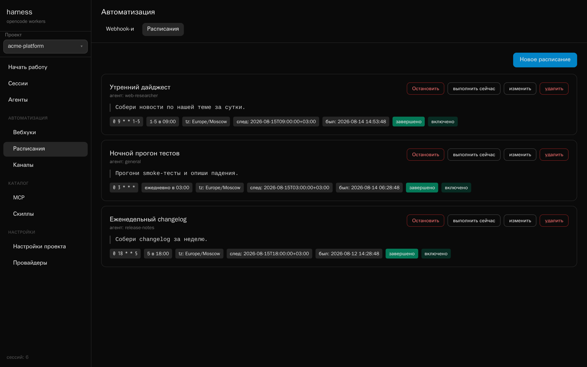
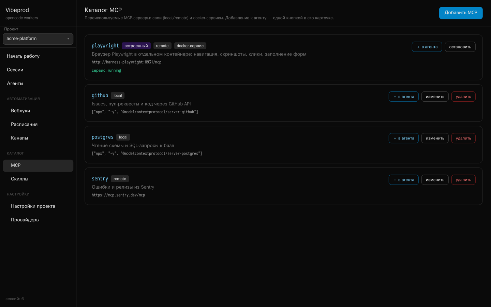
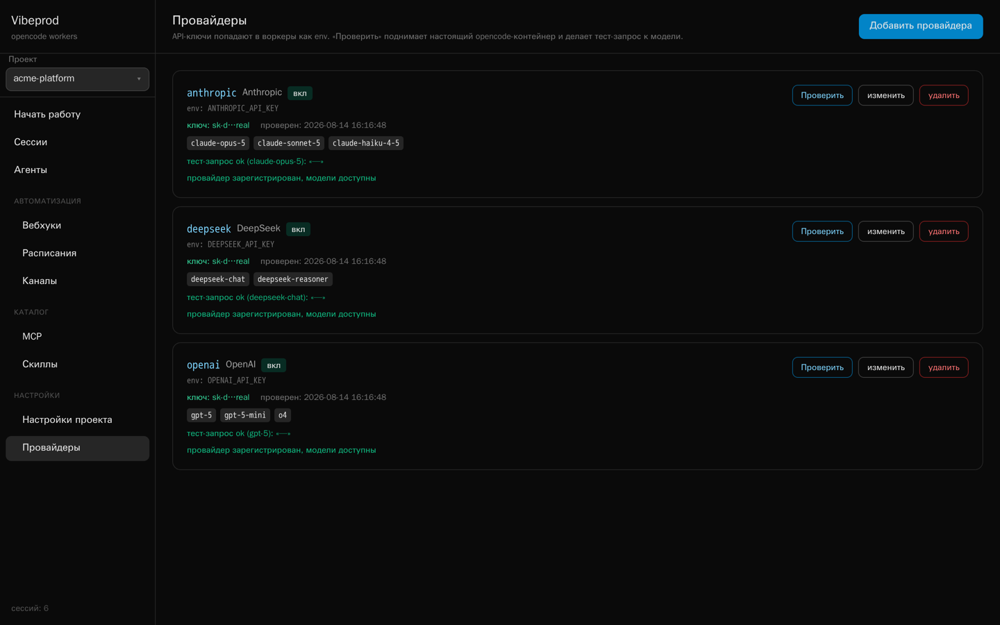

Your agents, your machine, your keys.
A self-hosted control plane for opencode. One web UI over many sessions — each in its own Docker container — started by hand, by cron, by webhook, or from a chat.
MIT licensed ~6k lines of Python SQLite, no queue Bring your own key Login on the front door
Triggers
One container per session
nothing leaves the machine — not the code, not the keys
The problem
opencode is an excellent coding agent, and it lives in your terminal — one session, in front of you, while you watch it. The moment you want a second one, or a nightly run, or an agent that answers a webhook from CI, you are on your own.
The hosted products solve that, and charge for it: your code goes to their sandbox, your automation lives behind their subscription. Vibeprod solves it on your hardware instead. It is one FastAPI process with a SQLite file next to it — no queue, no Kubernetes, no build step in the frontend.
What you get
Sessions are tagged by what started them, so a nightly cron run and a Telegram question sit in the same list with the same transcript. A worker can be restarted without losing the thread — history lives on a Docker volume, not in the container.

The broker reads the worker's SSE stream and fans it out over a WebSocket. Tool calls, reasoning blocks and todo lists appear as they happen; compact events go to SQLite and the full transcript is kept when the session goes idle.

An agent is a row in SQLite — model, mode, temperature, permissions, system prompt —
plus the MCP servers and skills attached to it. At session start that becomes a stock
opencode.json and a set of markdown files in the worker's workspace.
Nothing proprietary: what the worker sees is ordinary opencode configuration.

Cron schedules carry a timezone and record every run. Webhooks give any external system a URL to start an agent, optionally guarded by a secret, optionally blocking until the answer is ready. Telegram runs inside the broker on long polling — no public URL, no extra dependency — and streams the reply by editing the bot's message. Point it at a notification chat and every scheduled or webhook run reports back there, either always or only when it fails.

Outgoing webhooks turn the broker into a source of events instead of only a target.
Subscribe a URL to session.completed, session.failed,
schedule.fired or webhook.received and it gets a POST with
the session summary. Set a secret and the raw body is signed with HMAC-SHA256.
Failed deliveries retry with backoff — 1s, 5s, 15s, 60s, 300s — and every attempt,
successful or not, stays in the per-webhook delivery log with its response code,
ready to be replayed by hand.
POST https://ci.example.com/hooks/vibeprod X-Vibeprod-Event: session.completed X-Vibeprod-Signature: sha256=… {"event": "session.completed", "timestamp": "2026-08-15T09:00:00Z", "data": {"id": "…", "title": "Review PR #482", "result_text": "…"}}
A worker's workspace disappears with the worker. Project files don't: every project
gets its own bucket in a MinIO container that comes with the compose file, browsable
and uploadable from the Files page. Agents reach the same storage
through the files MCP server in the catalog — one click to attach —
whose upload_file tool pushes a file out of the worker and returns a
link. Together with Playwright and the bundled screenshot-to-files
skill that is a complete loop: take a screenshot, put it in the project, answer with
the URL.
The MCP catalog holds reusable servers: ordinary local and remote ones, and Docker services that Vibeprod starts on demand. The bundled Playwright service gives any agent a real browser in its own container, on a private network the workers share.

Provider keys live in your database and are injected into workers as environment variables. Check spins up a throwaway container with the same opencode image and your key, confirms the provider registers, lists the models it offers and makes a real generation call — the exact path a worker will take, so a bad key fails here instead of halfway through a scheduled run.

Put a login and password in .env and the UI asks for them: pages and the
whole API move behind a signed cookie that lasts a week. Webhook endpoints keep their
own secret and the operator's MCP endpoint keeps its bearer token, so automation
carries on working. Leave both variables empty and nothing changes — no login at all,
the way it was. This is one shared account, not user management: there is no user
list, no roles, and no audit trail.
The unusual part
Vibeprod ships with an operator agent that reaches back into Vibeprod itself through a private MCP server living inside the broker. Describe what you want on the home screen — “review agent for pull requests, give it GitHub, run it from a webhook” — and it creates the agents, attaches the MCP servers and skills, adds the providers, checks the keys, wires up the webhook and the schedule, and can put files into the project's storage on the way. You watch it happen in a normal session transcript, and nothing gets deleted without your say-so.
The operator's MCP endpoint is not in the catalog and cannot be attached to other agents: its URL and bearer secret are injected only into operator sessions.
Comparison
This is a small project, not a competitor to funded platforms on breadth or maturity. It wins on one axis — self-hosted automation with no cloud tier — and loses on another: the login it now has is a single shared account, with no users, roles or audit trail behind it.
| Vibeprod | OpenHands | opencode | Goose | Devin · Jules · Codex cloud · Cursor agents | |
|---|---|---|---|---|---|
| License | MIT | MIT | MIT | Apache-2.0 | Proprietary |
| Self-hosted | Only option | Yes, plus a managed cloud | Yes | Yes | No |
| Web UI over many sessions | Yes | Yes | No — TUI and serve API | No — desktop and CLI | Yes, vendor-hosted |
| Container per session | Yes | Yes | Runs on the host | Runs on the host | Vendor sandbox |
| Cron schedules | Built in | Cloud tier | No | No | Varies |
| Inbound webhooks | Built in | Cloud tier | No | No | Varies |
| Outbound webhooks | Built in | Varies | No | No | Varies |
| Chat channel (Telegram) | Yes | No | No | No | No |
| MCP support | Yes, shared catalog | Yes | Yes | Yes | Varies |
| Agent that configures the platform | Yes | No | No | No | No |
| Bring your own key | Yes | Yes | Yes | Yes | Subscription |
| Git and pull-request workflow | Via the agent and git | First-class | First-class | Yes | First-class |
| Auth, multi-user, RBAC | One shared login, no roles | Enterprise tier | n/a | n/a | Yes |
| Maturity | Early | Large, funded | Very large | Linux Foundation | Commercial |
Compiled August 2026 from public documentation. Hosted products move quickly — check the vendor's own pages before making a decision on this table alone.
You want agents on your own hardware, started by cron, webhooks and chat, reporting back over webhooks and Telegram, with per-session isolation and API keys that never leave the box.
You need per-user access control for a team, a hosted service with an SLA, or a mature pull-request review workflow out of the box.
Quick start
You need Docker and Python 3.11+ — or just Docker. The first start pulls the opencode image and builds a worker image on top of it, with git and openssh so agents can work with repositories.
On the host
# clone, configure, run git clone https://github.com/katskov-dev/vibeprod.git cd vibeprod cp .env.example .env # add one provider key ./run.sh # → localhost:8000
In a container
# same thing, dockerised git clone https://github.com/katskov-dev/vibeprod.git cd vibeprod cp .env.example .env docker compose up --build
Ask for a login, and for file storage
# .env — both empty means no login at all VIBEPROD_LOGIN=admin VIBEPROD_PASSWORD=change-me # project files live in MinIO; compose brings it up on loopback docker compose up -d minio # API 9000 · console 9001
Start an agent from anywhere
curl -X POST http://localhost:8000/api/webhooks/pr-review/run \ -H 'X-Webhook-Secret: …' \ -H 'Content-Type: application/json' \ -d '{"prompt": "Review the diff in PR #482"}'
The login is a single shared password, and the broker drives the Docker daemon — so
anyone who gets past it can run code as root on the host. Compose binds the port to
127.0.0.1 for that reason, and leaving VIBEPROD_LOGIN unset
means no login at all. Treat the login as a lock on an internal door, not as a reason
to expose the port: to reach it remotely, still put it behind a reverse proxy with TLS,
or a VPN. The details are in
SECURITY.md.